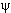
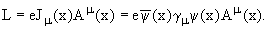
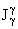
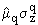

Основные свойства электромагнитного взаимодействия предполагаются известными на уровне обычных курсов физического факультета. Предполагается, в частности, известным вид лагранжиана взаимодействия электронов с электромагнитным полем. Электромагнитный ток отдельных барионов и кварков можно задать совершенно аналогичным образом через лагранжиан взаимодействия частицы заряда e, описываемой спинорным полем (x), с электромагнитным полем (x):
 |
(3.1) |
(При этом мы пока рассматриваем барион как
точечный.)
Переход к унитарной симметрии
означает, что вместо ψ(x) для
каждого бариона, следует подставить теперь весь
октет целиком (x).
А каковы свойства электромагнитного
тока в унитарной симметрии? Поскольку
электромагнитный ток есть суперпозиция
изовектора и изоскаляра, и сам ток заряда не
несет, его можно связать с компонентой октета векторных токов . Часть тока, связанная с
электрическим зарядом, должна быть такой, чтобы
заряды частиц оказались правильными. Опуская
пространственные индексы, запишем
(3.1) |
Здесь p =  и т.д.-
октетная матрица барионов JP = 1/2+.
Легко видеть, что заряды барионов
воспроизводятся правильно. То же справедливо и
для мезонов.
и т.д.-
октетная матрица барионов JP = 1/2+.
Легко видеть, что заряды барионов
воспроизводятся правильно. То же справедливо и
для мезонов.
Рассмотрим в импульсном представлении
часть лагранжиана взаимодействия, связанную с
магнитным моментом,
|
(3.3) |
(в импульсном представлении при выборе = (0,0,k3), = -k3 2, = k3
2, = k3 1, = 0. Когда же мы хотим определить
магнитный момент по взаимодействию частицы с
внешним магнитным полем, обычно выбираем
систему, в которой
1, = 0. Когда же мы хотим определить
магнитный момент по взаимодействию частицы с
внешним магнитным полем, обычно выбираем
систему, в которой  = (0,0,H3).)
= (0,0,H3).)
Эта та часть магнитного момента,
которая обычно именуется нормальным магнитным
моментом, присущим частицам спина 1/2, чьи
волновые функции удовлетворяют уравнению
Дирака.
Но есть еще одна структура Лоренца,
которая приводит к аналогичному конечному
выражению в нерелятивистском пределе:
()
Эта часть магнитного момента частицы
обычно именуется аномальным магнитным моментом,
для заряженных адронов соразмерного с величиной
нормального магнитного момента, так что полный
магнитный момент есть для них сумма этих двух
моментов, а для нейтральных составляет полный
магнитный момент частицы.
При построении октета барионного тока
из произведения октетов барионов и антибарионов
(с произвольной пространственной структурой
тока!), возможны, как мы уже знаем, две различные
унитарные тензорные структуры (что
соответствует наличию двух октетов в разложении
(3.5) |
причем = 0, α, β, γ, η =1,2,3, и тогда электромагнитный ток (мы опускаем пространственные индексы) запишется как
. |
(3.6) |
В результате для магнитных моментов барионов получим:
μ(p)
= F + frac{1}{}D/3, |
(3.7) |
(Напомним, что здесь  = p.)
Во многих современных моделях именно этими
формулами задаются лидирующие вклады в
магнитные моменты барионов, к которым затем
добавляются вклады, рассчитываемые часто в
рамках очень сложных теоретических построений.
= p.)
Во многих современных моделях именно этими
формулами задаются лидирующие вклады в
магнитные моменты барионов, к которым затем
добавляются вклады, рассчитываемые часто в
рамках очень сложных теоретических построений.
А как построить электромагнитный ток
кварков?
(3.8) |
где в квадратных скобках выделен
электромагнитный ток 3-х кварковой модели.
А как здесь решить задачу построения
тех же магнитных моментов барионов октета? Для
этого придется в явном виде расписать барионные
волновые функции через кварковые. В модели SU(3)f-симметрии
:
Тогда в нерелятивистском пределе магнитный момент бариона будет суммой вкладов магнитных моментов кварков, а оператор магнитного момента кварка q есть просто  (кварк, на который действует оператор магнитного момента, будем отмечать звездочкой *).
|
(3.9) |
где воспользовались тем, что два кварка из трех-спектаторы, так что
<u1u1d2| |u*1u1d2> = <u1|
|u*1u1d2> = <u1| |u*1>=
|u*1>= u etc.
u etc.
Соответствующие кварковые диаграммы можно записать как (приведена только часть из них, остальные сразу можно написать, исходя из подробно выписанного выше матричного элемента):
Подобным образом можно получить в рамках кварковой модели магнитный момент нейтрона:
μn
=  q=u,s<n
q=u,s<n ||n
||n > =
> =
=<2d1d1u2
- d1u1d2 - u1d1d2| |2d1d1u2 - d1u1d2
- u1d1d2> =
=μd - μu,
магнитный момент гиперона Σ+:
μ(Σ+) =  q=u,d<
q=u,d< +
+ ||
|| +
+ > =
> =
=<2u1u1s2
- u1s1u2 - s1u1u2||2u1u1s2 - u1s1u2
- s1u1u2> =
=μu - μs,
магнитный момент гиперона Σ-:
μ(Σ-) =  q=u,d<
q=u,d< -
- ||
|| -
- > =
> =
=<2d1d1s2
- d1s1d2 - s1d1d2||2d1d1s2 - d1s1d2
- s1d1d2> =
=μd - μs,
магнитный момент гиперона  (получение которого мы выпишем
подробнее из-за того, что он имеет волновую
функцию другого вида) :
(получение которого мы выпишем
подробнее из-за того, что он имеет волновую
функцию другого вида) :
|
+ s1u*1d2 - s1u1d*2
- d*1s1u2 - d1s*1u2 + d1s1u*2
- s*1d1u2 - s1d*1u2 + s1d1u*2>
= |
(3.10) |
магнитный момент каскадного гиперона Ξ0:
μ(Ξ0) =  q=u,s<Ξ0
q=u,s<Ξ0 ||Ξ0
||Ξ0 > =
> =
=<2s1s1u2
- s1u1s2 - u1s1s2||2s1s1u2 - s1u1s2
- u1s1s2> =
=μs - μu,
и магнитный момент каскадного гиперона Ξ-:
μ(Ξ-) =  q=d,s<Ξ-
q=d,s<Ξ- ||Ξ-
||Ξ- > =
> =
=<2s1s1d2
- s1d1s2 - d1s1s2||2s1s1d2 - s1d1s2
- d1s1s2> =
=μs - μd.
Здесь q1 = q , q2 = q, q =
u,d,s,c,b,t.
, q2 = q, q =
u,d,s,c,b,t.
Для примера приведем некоторые результаты теоретических расчетов магнитных моментов барионов и соответствующие экспериментальные данные.
| μ(B) в из [2] |
μ(B) в
μN из [3] |
μ(B) в
μN из [4] |
μ(B) в
μN из [5] |
μ(B) в
μN из [6] |
2.69 |
2.78 |
2.75 |
2.793 |
2.79 |
-1.85 |
-1.86 |
-1.84 |
-1.69 |
-1.91 |
2.59 |
2.50 |
2.69 |
2.481 |
2.43 |
-1.22 |
-1.215 |
-0.98 |
-1.155 |
-1.15 |
-0.61 |
-0.6397 |
-0.66 |
-0.6507 |
-0.66 |
-1.33 |
-1.244 |
-1.58 |
-1.274 |
-1.25 |
-0.59 |
-0.631 |
-0.72 |
-0.604 |
-0.64 |
 .
.